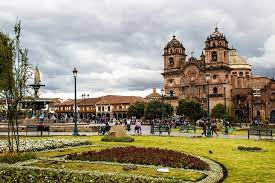

Machu Picchu
Se creía (según Richard L. Burger , profesor de antropología en la Universidad de Yale ) que Machu Picchu fue construido en la década de 1450. [22] Sin embargo, un estudio de 2021 dirigido por Burger utilizó la datación por radiocarbono (específicamente, AMS ) para revelar que Machu Picchu pudo haber estado ocupado aproximadamente entre 1420 y 1530 d.C. [23] [24] La construcción parece datar de dos grandes gobernantes incas, Pachacutec Inca Yupanqui (1438-1471) y Túpac Inca Yupanqui (1472-1493). [25] [26] : xxxvi
Un consenso entre los arqueólogos es que Pachacútec ordenó
la construcción de la finca real para
su uso como refugio, muy probablemente después de una exitosa campaña militar.
Aunque Machu Picchu se considera una propiedad "real", no se habría transmitido en la línea sucesoria . Más bien se utilizó durante 80 años antes de ser abandonado, aparentemente debido a las conquistas
españolas en otras partes del Imperio Inca . [22] Es posible que la mayoría de sus habitantes murieran a causa de la viruela introducida por los viajeros antes de que los conquistadores españoles llegaran a la zona
.jpg)
Sacsaywaman
Sacsayhuamán (en quechua Saqsaywaman, de saqsay, lleno o satisfecho, y waman, halcón, es decir, "halcón satisfecho") es un templo ceremonial inca, ubicada a dos kilómetros al norte de la ciudad de Cuzco (Perú). Se comenzó a construir durante el gobierno del sapa inca Pachacútec, en el siglo xv; sin embargo, fue Huayna Cápac quien la culminó en el siglo xvi.1
No se conoce con exactitud los métodos empleados para la construcción de esta monumental fortaleza o santuario, a pesar de que son descritos por cronistas como Bernabé Cobo y Felipe Guamán Poma de Ayala (uso de terraplenos, rampas y maromas), la cual produjo la admiración de Francisco Pizarro y sus hombres. Pedro Sánchez de la Hoz, secretario de Pizarro, dejó una primera descripción del edificio, pero la más detallada es la del cronista Inca Garcilaso de la Vega.
Desde el centro arqueológico se tiene una singular vista panorámica de los entornos, incluyendo la ciudad de Cusco.
.jpg)
Cusco Main Square
La plaza de Armas del Cuzco se encuentra en la ciudad de Cusco, Perú. Ubicada en pleno centro histórico de la ciudad es el principal espacio público de la localidad desde antes de su fundación española en 1534.
Estudios geológicos realizados en ella demuestran que originalmente existía allí un pantano1, atravesado por el río Saphy (actualmente canalizado y cubierto). Durante el imperio incaico dicho pantano fue secado y transformado en el centro administrativo, religioso y cultural de la capital imperial2. Ahí se realizaba todo tipo de ceremonias y se celebraban las victorias del ejército inca. Después de la conquista española, fue transformada en una plaza por los nuevos gobernantes, quienes construyeron templos católicos y mansiones sobre las ruinas de los antiguos palacios incas. En esta plaza, fue ejecutado Túpac Amaru II en 1781 así como el cacique Bernardo Tambohuacso, Mateo Pumacahua y varios otros próceres de la independencia del Perú.
Actualmente es el núcleo central del Cusco moderno, rodeado por restaurantes turísticos, joyerías, agencias de viaje y las mismas iglesias católicas levantadas durante el periodo colonial y que constituyen dos de los monumentos más importantes de la ciudad: la Catedral del Cusco y la Iglesia de la Compañía de Jesús.
Desde 1972 el inmueble forma parte de la Zona Monumental del Cusco declarada como Monumento Histórico del Perú.3 Asimismo, en 1983 al ser parte del casco histórico de la ciudad del Cusco, forma parte de la zona central declarada por la UNESCO como Patrimonio Cultural de la Humanidad.4
